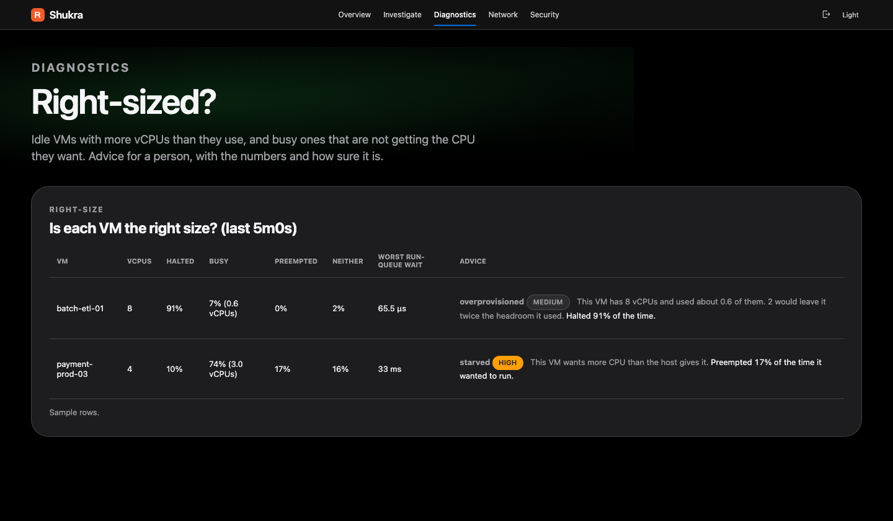
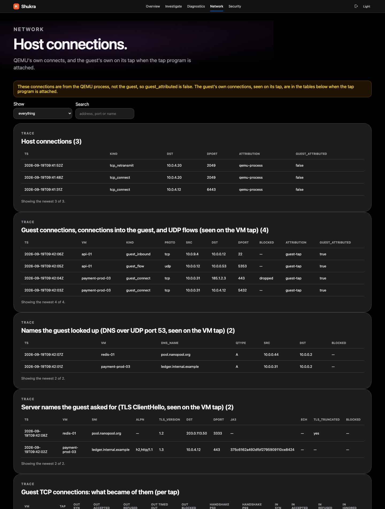
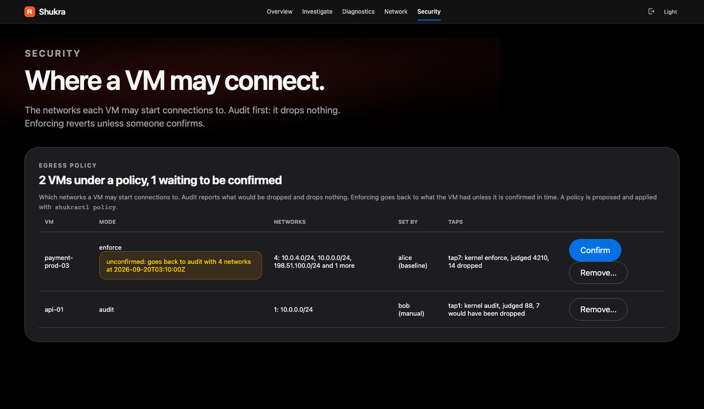
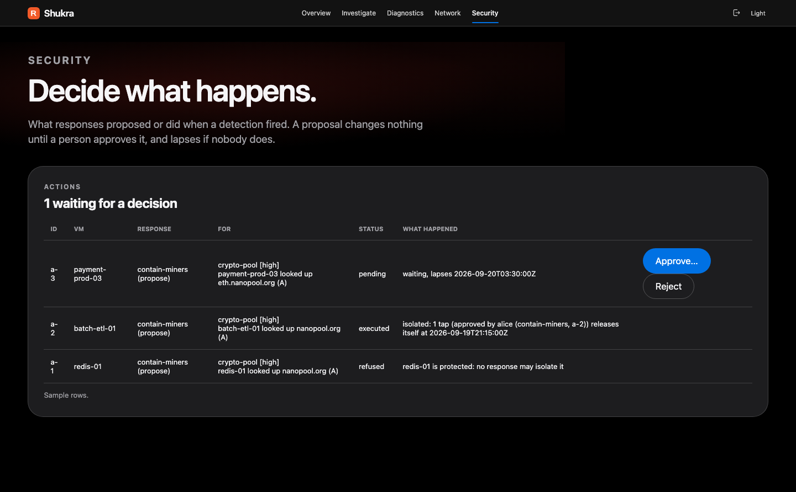
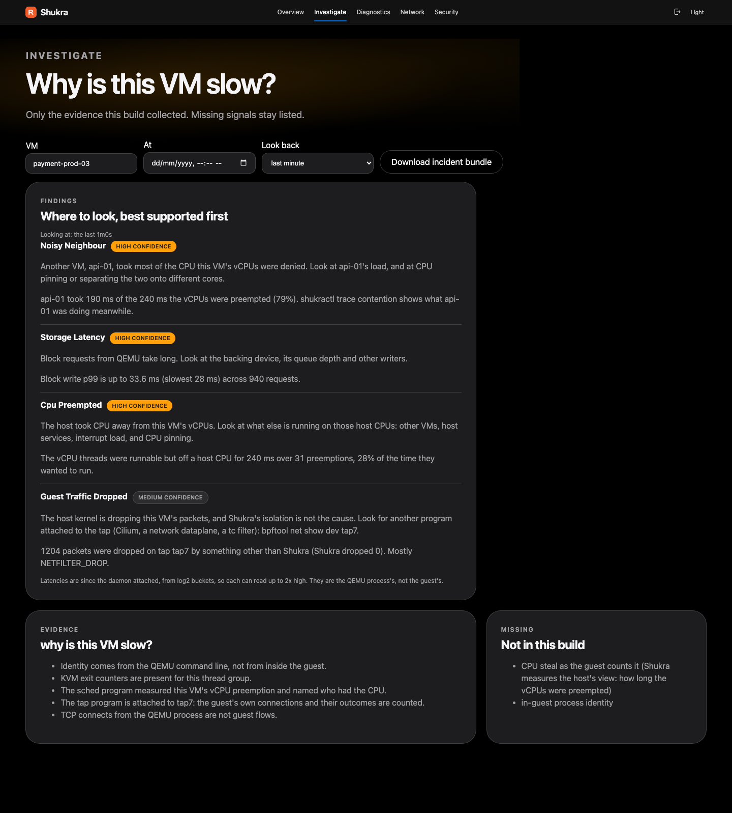
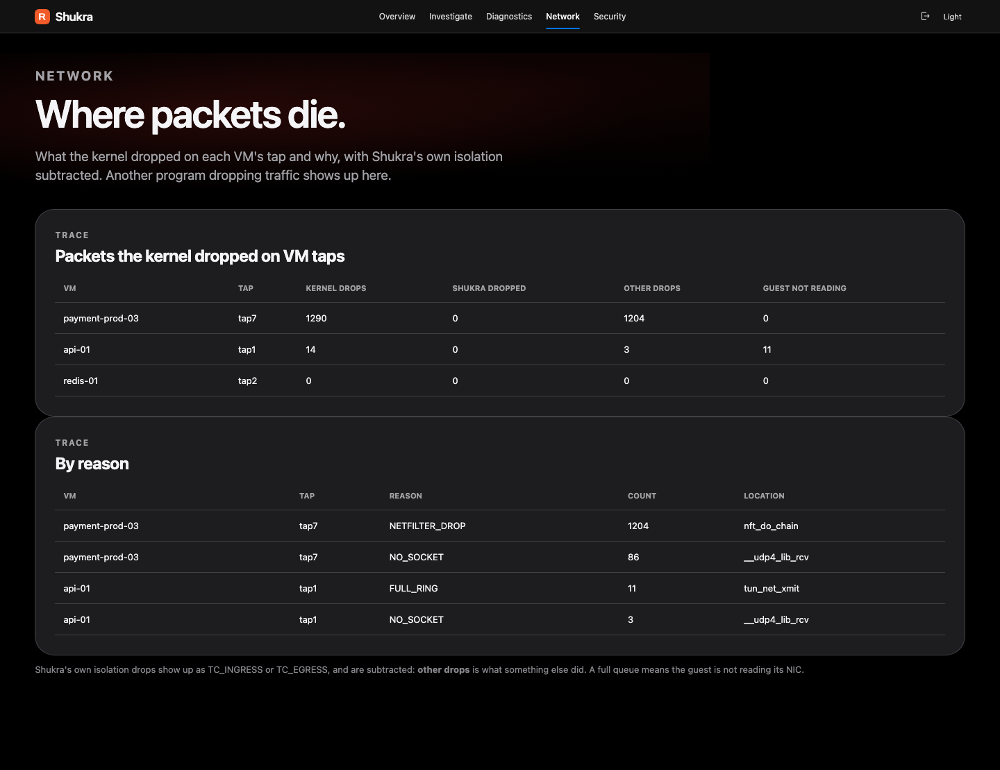
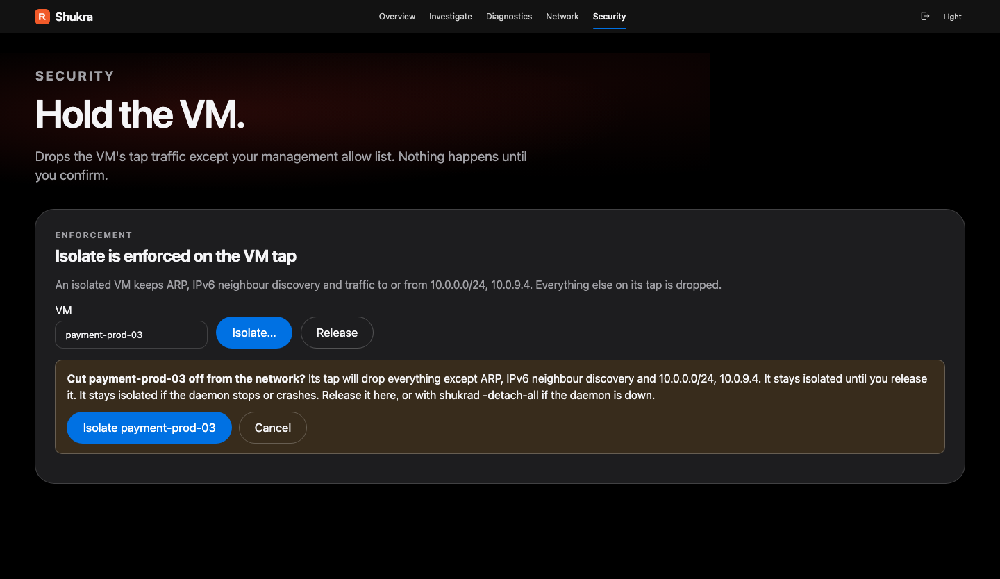

Another ticket: api-01 cannot reach a service. Is the destination refusing, is something dropping the packets, is the guest not reading its NIC, or is Shukra itself in the way? The tap answers each connection, and the kernel names each drop.
| Reason on the tap | What it means | Where to look |
|---|---|---|
| TC_INGRESS, TC_EGRESS | a tc or TCX program on the tap dropped a frame; if Shukra accounts for it, that was isolation | bpftool net show dev <tap>: another program (Cilium, a tc filter) |
| FULL_RING | the tap's queue is full: the guest is stalled, has no working NIC driver, or is overloaded | the VM itself |
| NETFILTER_DROP | iptables or nftables | the rule whose packet counter is moving |
| QDISC_DROP, CPU_BACKLOG | the host's own queues are overflowing | host load and qdisc settings |
Each drop is also attributed to the function that freed the packet. Shukra's own isolation drops are subtracted, so "is it us?" has an answer: shukractl trace drops. Reason names are read from the running kernel's BTF and never hard-coded; one it cannot name is shown as reason N, not guessed.
shukractl trace tap --vm api-01 shows accepted, refused, never answered and blocked per direction, with the guest's handshake time.shukractl trace drops --vm api-01 says what the host kernel dropped on the tap, by reason and function, and whether it was Shukra.shukractl isolate api-01 drops its tap traffic except your management network. It prints whether the kernel took the change.-isolate-allow) and Linux 6.6 or newer, and is refused without them, because a VM that could reach nothing could not be reached by the host that isolated it. applied is true only after the kernel took the change on every tap; a half-applied isolation is reported partial, not silently reopened. It blocks the VM's tap: it does not touch vhost-user or SR-IOV interfaces.A VM that idles at eight vCPUs wastes host CPU, and one that wants CPU and is not getting it costs its users. The counters Shukra already has answer both, in both directions. The answer is advice for a person, with the numbers and how sure it is. Nothing here resizes a VM.
Illustrative fixture numbers, over a five-minute window.
shukractl advise shows, per VM, the share of the window its vCPUs were halted, busy and preempted, then advice: overprovisioned (with a size that leaves twice the headroom it used), starved, nearly_idle, no_change, not_enough_data or idle_unavailable.
Idleness is HLT exit time, so a guest that idles by polling reads as busy. The share that is neither halted nor on a CPU is reported, and when it is 30% or more, no_change says that is not proof the VM is right-sized.
Exit reasons are named on Intel hosts. Elsewhere Shukra says idle_unavailable and claims nothing about over-provisioning; starvation is still reported.
Every piece of advice carries a confidence and its evidence. A window under three minutes lowers it; under 20 seconds of history the answer is not_enough_data. Only vCPU threads count.

A watchlist needs someone to know what is bad. A baseline needs no one to know: it learns what each VM normally does and reports the first time it does something new. A web server that has talked to the same three networks for a month and suddenly talks to a fourth is worth a look, and no rule had to name that network in advance.
A whole network and a whole site, not an address and a host, so a service that moves between neighbouring addresses or a site with a new subdomain is not new each time. A short built-in list of 63 two-label suffixes (co.uk, com.au) keeps names right without the full public suffix list; for one it lacks, a name is learned too wide, which is quieter and never louder.
Everything is learned from the VM's own tap, so every detection is guest-attributed. A host connect belongs to QEMU and is never learned. A VM first seen later has its own learning period, so a new VM does not alarm for its first day.
$ shukractl baseline BASELINE learning period 24h0m0s, at most 20 new-item alerts per VM per day vm=web-01 learning until 2026-09-21T03:00:00Z (destination 4, dns-suffix 2, inbound-peer 0) new alerts today 0, held back in all 0 vm=db-01 reporting (destination 9, dns-suffix 1, inbound-peer 1) new alerts today 3, held back in all 5 [medium] new-destination web-01 contacted 192.0.2.0/24 for the first time (tcp to 192.0.2.44:22) as printed in docs/baselines.md (documentation example addresses)
Off unless the rules file has a baselines: section. It needs -data-dir: without it, learning starts over with every restart and a daemon that restarts more often than the learning period would never report anything. shukractl doctor warns about exactly that.
shukractl baseline VM --forget (admin key only) restarts a VM's learning after a deliberate change. It could also hide a change, so it is recorded as a baseline-forgotten detection naming who did it.
destinations, dns), not a baseline. Past the daily cap, new items are still learned and counted but not reported, and one baseline-cap detection says so.A guest reaches a site by address, by a DNS lookup or by a TLS connection, and the last two say the name. Shukra reads that name from the first packet on the VM's own tap, so a guest that skips DNS, or asks a resolver over HTTPS, is still seen going somewhere.
The first question of a plain query on UDP port 53, IPv4 or IPv6. The tap program copies at most 128 bytes and the daemon decodes the name and type. A repeat is announced once a minute. Not seen: answers, DNS over TCP, TLS or HTTPS, and a second question.
A ClientHello goes out before anything is encrypted and holds no application data. For a segment that starts one, the kernel copies up to 1,504 bytes; the daemon decodes it into one guest_tls event and throws the bytes away. It has its own budget of 100 events per tap per second.
| guest_tls field | What it says |
|---|---|
| sni | the server name, lower-cased and printable. Empty when the hello has none, and never half a name |
| alpn, tls_version | the protocols offered (at most 8, such as h2,http/1.1) and the highest version the client offered |
| ja3 | a fingerprint of the hello, present only when the whole hello was seen. It says what kind of client library made it, not who the client is |
| ech | the hello uses Encrypted Client Hello, so sni is at most the outer, public name and says nothing about the real site |
| tls_truncated | the hello did not end inside the copy |
tls: rules match a name by suffix, exact or contains, like dns: rules; the two do not judge each other's names.shukractl watch prints sni=, and the console lists the names, searchable by name, protocol and fingerprint.-tls-events=false makes the program read no TCP payload at all; -dns-events=false does the same for DNS.
A QEMU process in steady state is quiet in a particular way: its disk images are already open and it makes none of the calls a normal program makes to reach around itself. So when one opens a file, or calls ptrace, mount or a module load, something is wrong: a guest that escaped into the VMM, or a person with a shell in it.
On the reference hypervisor, ten running QEMU processes made no openat, openat2, open, ptrace, mount, unshare or setns call in thirty seconds. So any one is worth a look, and the reports are very few.
A built-in list: /etc/shadow, sudoers, ssh keys, /proc/*/mem, the docker and containerd sockets, k3s server files, and /etc/shukra and /var/lib/shukra, which hold Shukra's own key and data. A vmm: section adds paths, exempts some with ignore (a VM image under a watched directory) or narrows the calls.
| Detection | When | Severity |
|---|---|---|
| vmm-sensitive-open | a watched process opens a path on the sensitive list | critical (configurable) |
| vmm-syscall | a watched process makes one of the ten calls | critical for ptrace, process_vm_writev, module loads and kexec; high for process_vm_readv, mount, unshare, setns |
| vmm-flood | a VMM, with all it started, made more than 300 opens and calls in a second | critical |
vmm-sensitive-open critical cat (pid 4321) in web's VMM process tree opened /etc/shadow, which matches /etc/shadow: a VMM has no reason to
vmm-syscall critical gdb (pid 77) in web's VMM process tree called ptrace (request 16 (ATTACH) on pid 1): a VMM has no business doing that
as printed in docs/vmm-tripwires.md. A VMM starting or stopping opens a few files: those are events, not detections
-vmm-tripwires=false does not load it.A VM's baseline says where it normally connects. An egress policy turns that into a list the tap program holds it to: the VM may start connections to these networks and no others. A wrong policy cuts a working VM off, so it is built to be tried before it is believed. Nothing changes for a VM until one is applied.
What the guest starts: a TCP SYN, or a UDP datagram that is not multicast and not an answer. A server keeps working under enforcement. ICMP, established connections, multicast and broadcast are not judged. Networks only, not ports or names.
The allow list (-isolate-allow), a -data-dir, a non-empty list, and --confirm (30 seconds to 24 hours) or --permanent. Audit needs none of them. Apply, confirm and remove need the admin key.
doctor flags.policy-applied, -confirmed, -reverted, -removed), so a webhook hears of it. A stray connection is a low egress-policy-audit or a medium egress-policy-blocked.
A detection tells a person something is wrong. A response can also do something about it, and the only thing it can do is isolate the VM. Because that cuts a running workload off, it is built so it cannot happen by accident. It is off until the rules file has a responses: section.
| Guardrail | What it does |
|---|---|
| never_isolate | no response may isolate a listed VM, not even an approved proposal |
| isolate must work | nothing is attempted without -isolate-allow and the tap program. A dry run is still recorded |
| max_per_hour, cooldown | at most 3 automatic isolations an hour by default (1 to 100); a VM is left alone for an hour after an action, so a storm is one action |
| expire, release_after | a proposal nobody decides lapses (30 minutes by default); a timed release survives a restart. Approving checks the guardrails again |
Every proposal carries the bundle shukractl incident gives: the verdict, the window's detections, up to 500 recorder events, the VM's isolate requests, the allow list and the programs, over the 15 minutes before the detection. Nothing from the daemon's configuration. Stored per action, mode 0600, as sensitive as the event list. incident --at gives the same for a past time.
Each decision is an action with an id, the detection behind it, who decided and what the isolate request answered. Each step is announced as a detection, so a webhook can page whoever approves. "Who" is a label the caller sends, shukractl or api: the API key is one key, not a login.

never_isolate.enforce response for a rule it can trigger it can get itself isolated, never another VM. Keep enforce rules narrow, and try one as dry_run first.The accurate promise is stronger than "no agent": nothing runs inside a guest, and no application data is read, with three named exceptions. Each is bounded, decoded in the daemon, and has a switch.
Metadata only. Counters and histograms from the host: exits, scheduling, block requests, TCP connects, tap packet counts. From a tap: headers, so flow addresses and ports, handshake outcomes and kernel drop reasons. VM names from the QEMU command line.
The name in a plain DNS query, the server name in a TLS ClientHello, and the file names a VMM opens. Answers, the rest of a TLS connection and file contents are not read. Host task names (comm) also appear.
Anything inside a guest. Application payloads. The guest's own steal counter. Which process in the guest made a connection. Keys in any API response, in doctor or in systemctl show.
| Exception to "no payloads" | How much is copied, and what is kept | Turn it off |
|---|---|---|
| DNS names | the first question of a plain query on UDP port 53: at most 128 bytes, kept as the name (cut at 253 bytes) and the type | -dns-events=false |
| TLS ClientHello | up to 1,504 bytes of the segment that starts a handshake, before anything is encrypted. The daemon keeps the server name, protocols, version and a JA3 fingerprint, and discards the bytes | -tls-events=false: no TCP payload is read at all |
| VMM file names | the path a QEMU process, or a program it started, opens (up to 256 bytes) with the program name and pid. Never the contents | -vmm-tripwires=false |
All three are sensitive: a name says what a VM is doing, a fingerprint what software it runs, and a path can name a person or a secret. The scheduler program also records the command name of a host task that took a vCPU's CPU, so names such as kubectl can appear in the API.
| Question | Answer |
|---|---|
| Does anything run inside the VM? | No. There is no agent. Everything is read from the host: /proc, kernel tracepoints, and the host side of each VM's tap. |
| Are host TCP events the guest's? | No. Host connects are the QEMU process's own sockets, labelled qemu-process and guest_attributed: false, as is what a VMM opens or calls. Only events seen on a VM's tap are guest-tap and guest-attributed, and only for a tap that belongs to a VM in the current scan. A tap no VM owns stays unattributed. |
| Can a guest change what is attributed to it? | No. Attribution comes from the tap's owner, found on the host, not from anything in a packet. A guest cannot make another VM's traffic look like its own, and a detection names the VM whose tap it was seen on. |
| Does the advisor change anything? | No. Right-size advice is text for a person, with the evidence and a confidence. Nothing resizes a VM. |
| What does an incident bundle expose? | VM names, addresses, DNS and TLS names and file paths, as the event list does. Nothing from the daemon's configuration except the allow list. It is written with mode 0600. |
shukractl doctor names it. Treat the data directory as sensitive, and alert sinks as a place that data leaves the host.Shukra is a privileged daemon on a hypervisor, next to the VMs it watches. The parties that touch it are not equally trusted, and every table a guest can fill is bounded.
| Party | Trusted? | What it can do, and what limits it |
|---|---|---|
The host: kernel, root, /proc | entirely | Shukra believes /proc. Host root can stop, replace or read it: it is not a defence against a compromised hypervisor. |
| The operator, with the admin key | yes | Isolate or release any VM, apply, confirm or remove an egress policy, approve or reject a response, forget a baseline. One key, no per-person identity: the recorded actor is a label the caller supplies. |
| A holder of the read-only key | for reading | Reads everything, including /metrics, the stream, the recorder and incident bundles. Cannot change anything: every request that is not GET or HEAD is refused. Give this one to Prometheus. |
| A caller with no key | no | Gets /healthz, /readyz and the console's static files, and nothing else. |
| A guest | no | Chooses every byte it sends. It can make Shukra do work and record events, within fixed limits. It cannot change what is attributed to it, cannot read or write anything of Shukra's through the tap, and cannot get another VM isolated, dropped by a policy or blamed. |
| A VMM: QEMU and what it starts | watched, not trusted | It is where a guest escape lands, so it is what the tripwires watch. A taken-over VMM can rewrite its own command line, which is how Shukra names a VM's tap. A VMM that is root on the host is host root, above. |
| Where alerts go | not with your data | A webhook, syslog or file receives every detection, which names VMs and addresses. The webhook is signed when a secret is set. |
A very high packet rate costs CPU in the tap program on that tap, and a flood of unanswered SYNs makes the pending table forget its oldest entries. Neither hides the flood: the counters see every frame. Text from a guest is lower-cased, cut at 253 bytes and made printable before it goes anywhere.
Pending handshakes and UDP flows 65,536 each, tables of names already seen 16,384 each, a VMM's reported calls 300 a second, the event list 2,048 events in six classes with guaranteed shares, the flight recorder 4,096 per VM. At the bound the oldest entry is forgotten and the counters still count.
The service runs as root with six capabilities, NoNewPrivileges, a read-only filesystem apart from its data directory, and a restricted set of address families. CAP_SYS_PTRACE and CAP_DAC_READ_SEARCH only read a libvirt VM's tap names from /proc/<pid>/fd: drop them if you run no libvirt VMs.
Isolation and a policy drop what crosses a VM's tap. They do not touch vhost-user or SR-IOV interfaces, a tap outside the host's network namespace, or anything that is not network traffic (vsock, virtio-serial). ARP and IPv6 neighbour discovery always pass under isolation.
shukractl doctor on every host.The console is served by the daemon on port 30970 and talks only to its API. Every page says what it knows, how it knows it, and what it cannot see.
Programs attached, VMs found, detections.
Virtual machines, Flight recorder, Explain.
KVM, Scheduler, Contention, Right-size, Block, Programs.
Host connections (with TLS names), Drops.
Detections, Actions, Egress policy, Isolate.



Illustrative: all captures are rendered from the console's fixture data. They are not a live host or customer data. Contention, Right-size, Host connections, Egress policy and Actions appear on earlier pages.